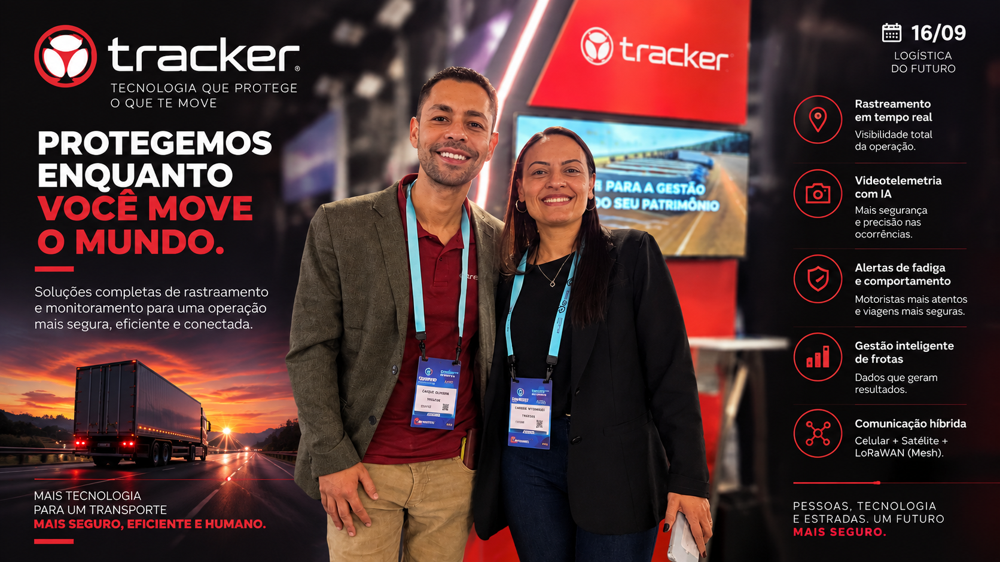

O Grupo Tracker aposta em uma tecnologia que jammer nenhum consegue derrubar: radiofrequência com rede própria de antenas.
O Grupo Tracker atua há mais de 25 anos no mercado e tem como carro-chefe a tecnologia de rastreamento e recuperação de veículos e cargas por radiofrequência. Possuímos uma rede própria e exclusiva de antenas e rádio frequência em todo o país, acompanhada por uma estrutura operacional terrestre e aérea especializada.
Imune ao bloqueador de sinal
Os rastreadores convencionais baseados em GPS e GPRS/4G podem ter seu sinal inibido quando criminosos utilizam bloqueadores. A tecnologia de radiofrequência da Tracker não é afetada por jammers, permitindo que nossos receptores localizem o ativo roubado mesmo se ele estiver escondido dentro de galpões fechados, subsolos ou baús metálicos.
Redundância dupla
Oferecemos o Tracker Log, que combina rastreamento com um dispositivo de RF; e o Tracker Log Max, que possui dois dispositivos de RF integrados no mesmo conjunto para garantir redundância total na localização.
A central que coordena tudo isso tem nome: COG.
Toda a operação é gerenciada pela nossa central inteligente, o COG.
Raio-X: Grupo Tracker
- O que é?
- Empresa especializada em localização e recuperação de veículos e cargas roubadas via radiofrequência própria.
- Qual problema resolve?
- Perda de sinal por jammer e localização de cargas escondidas em locais fechados ou sem cobertura celular.
- Qual a principal inovação?
- Rede própria de antenas de RF, imune a bloqueador de sinal, com estrutura de busca terrestre e aérea.
- Para onde vai?
- Integração da recuperação de ativos por RF a softwares de gestão de frota e telemetria.